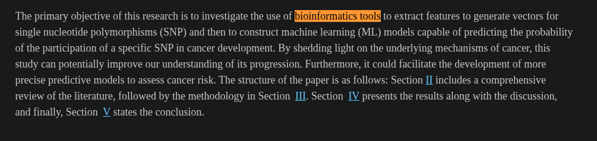
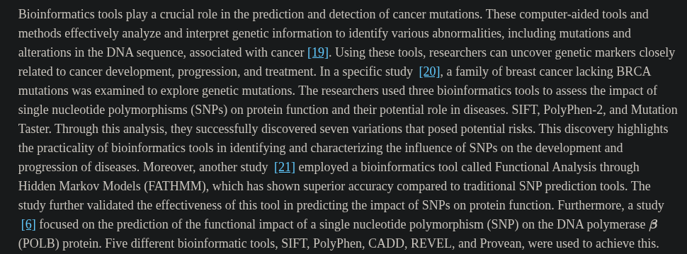
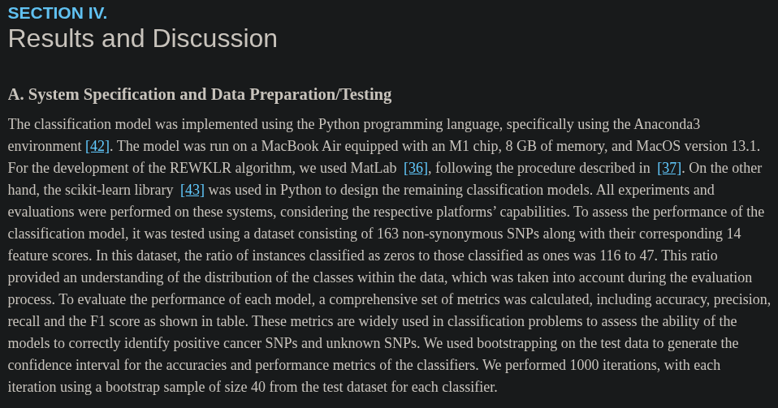
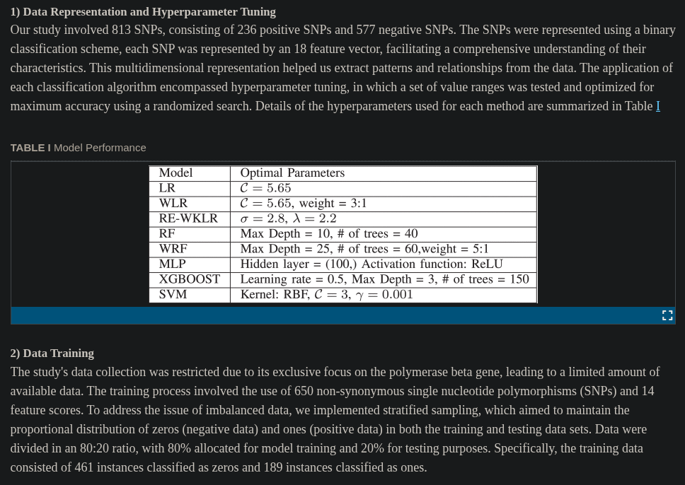
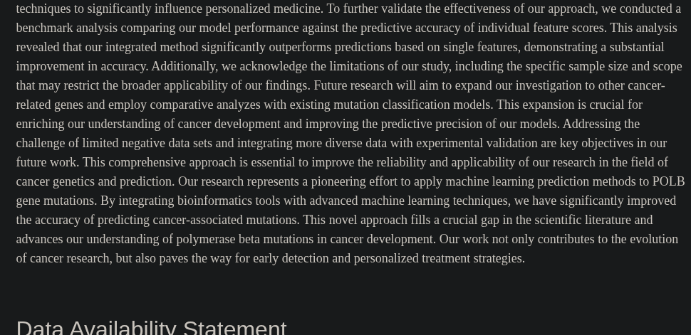

Collaborative Research Areas - Bioinformatics
How does this collaborative research area use Computer Science?
In bioinformatics research, one of computer science's usages is in using machine learning (ML) for identifying patterns in DNA mutations. Single-nucleotide polymorphism, or SNPs, is a single position in a DNA sequence that varies in a population. Using Python, MATLAB, bioinformatics tools, and ML algorithms, researchers were able to identify patterns in DNA mutations to predict which SNPs may lead to cancer.
How does this collaborative research area use Computer Science?
Bioinformatics research combined with computer science can positively benefit healthcare globally by helping researchers to identify cancer-related genetic mutations accurately. This could improve cancer screening, early detection, and lead to better diagnosis as well as more personalized and effective treatment.
How does this collaborative research area use Computer Science?
Research on cancer in bioinformatics when using computer science aspects, such as machine learning, requires collecting and analyzing large quantities of genetic information. This can create many concerns on privacy and how such data is used.
Sources
- Analysis of Cancer-Associated mutations of POLB using machine learning and bioinformatics. (n.d.). IEEE Journals & Magazine | IEEE Xplore. https://ieeexplore.ieee.org/document/10517443




